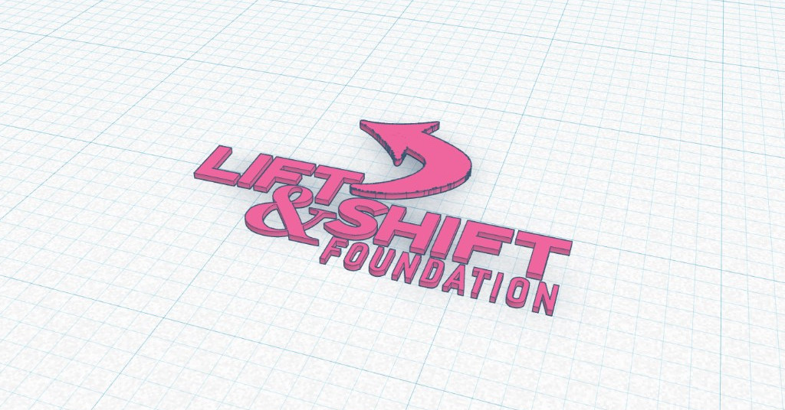

Along with a team of three, built a environmentally-friendly smart cane system and accompanying mobile app to assist seniors and prevent falls. Won 1st place in ACSEF and moved on to CSEF 2025.
Coded in C++ and Android Studio. Fitted a cane with ultrasonic sensors, TECs, a bluetooth module, haptic motors, a gyroscope, and a pulse sensor.
Gained futher experience in working with a team, giving a pitch, and handling hardware/software components.
Web Dev. Intern at Lift & Shift(2023-Present)

Coded elements for and fixed bugs on the Lift & Shift Website.
Gained further experience with HTML/CSS/JS, working with a team, and coding around existing architecture.